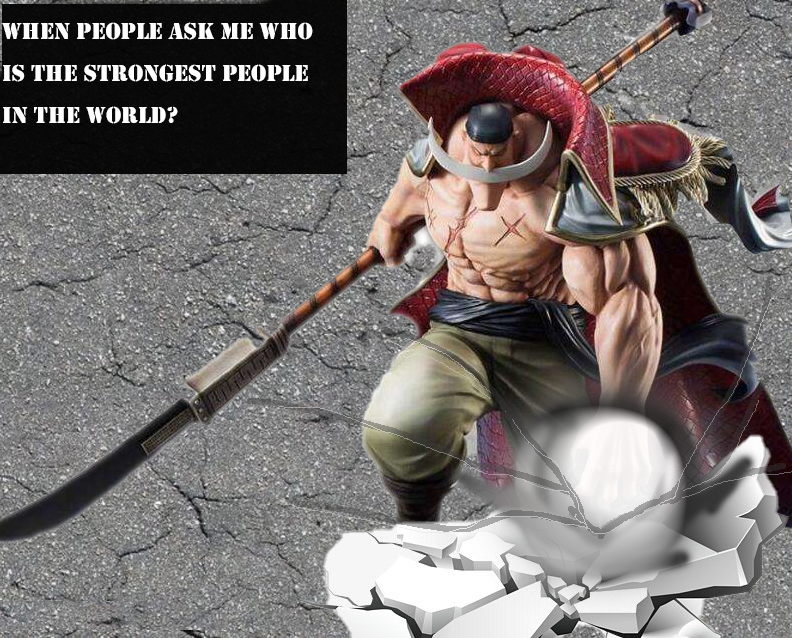
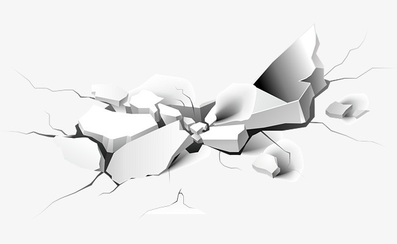
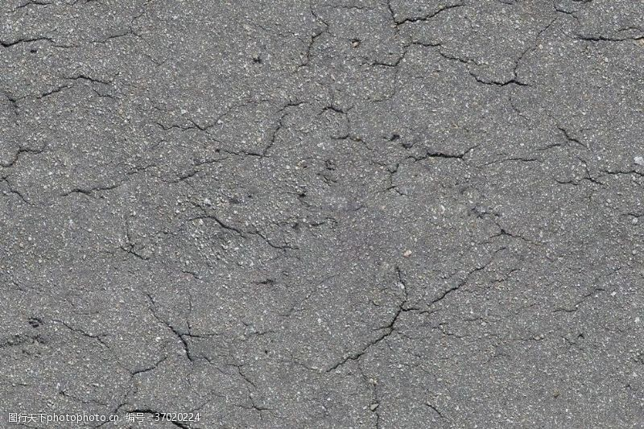
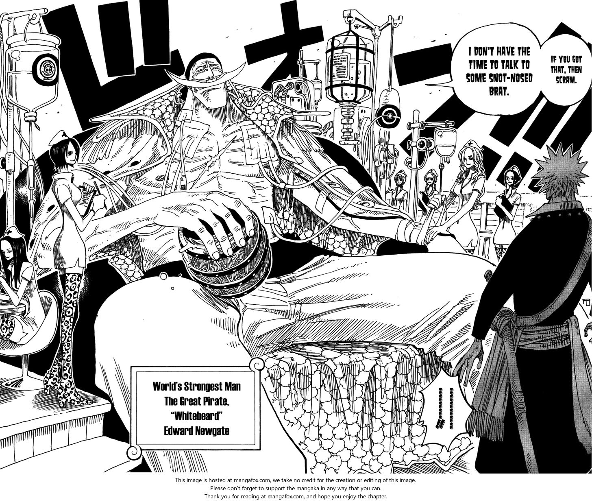

<!DOCTYPE html>
<html>
<head>
	<title>The Strongest Man</title>

</head>
<body>

<head>
<style>

body {
  background-image: url("onepiece.gif");
  background-repeat: repeat-y;
  background-position: right; 

}

h1 {
	color: #2CB200;
  text-align: center;
  font-family: comic sans Ms
}


p {
  	color: black;
  font-family: Tahoma;
  font-size: 20px;
}

h3 {
  	color: #004284;
  font-family: comic sans Ms;
  text-align: center;
  font-size: 25px;
}

img {
  display: block;
  margin-left: auto;
  margin-right: auto;
}

* {
  box-sizing: border-box;
}

.column {
  float: left;
  width: 33.33%;
  padding: 5px;
}

/* Clearfix (clear floats) */
.row::after {
  content: "";
  clear: both;
  display: table;
}

ul {
  list-style-type: none;
  margin: 0;
  padding: 0;
  overflow: hidden;
  background-color: #333;
}

li {
  float: left;
}

li a {
  display: block;
  color: white;
  text-align: center;
  padding: 14px 16px;
  text-decoration: none;
}

li a:hover {
  background-color: #111;
}

</style>
</body>
</html>

<ul>
	<li><a href="#CI">Which images I choose </a></li>
	<li><a href="#CHA">Who is white beard</a></li>
	<li><a href="#MF">My feedback of my work</a></li>
	<li><a href="index.html">About Me</a></li>
	<li><a href="Essay Media art.html">Go to New Media Art</a></li>
</ul>

<h1>My media art assignment</h1>

<p>The top of the navigation bar can help you go to each position. XD </p>

<p>This image is my assignment, It is free topic and just choose any images you like and create a composition image. 
<br>The softward I choose is Photoshop. Photoshop is a nice image editor.</p>


<p>Let's go back the topic of my image, this is the image I created</p>


<h3 id="CI">which image I choose </h3>
<p>It is not hard to see there are three different images. One is back ground, One is character and One is a breaking effects</p>


  <div class="column">
    
  </div>
  <div class="column">
    
  </div>
  <div class="column">
    
  <br>
</div>
</head>

<p>I also learn how to change the light value that is light effect.<br> As the light effect make the light value more stronger about 
I draw, in, that very similar as the animation made. <br>There is the <a href="https://www.youtube.com/watch?v=wDTkILaIV90"target="_blank">Youtu video.</a>It is good video to teach light effect.</p>


<h3 id="CHA">Who is White beard </h3>
<p>White Beard is the animat "One Piece" character and His name is Edward Newgate. 
<br>His "Devil Fruit" Tremor-tremor Fruit such as his special skill to create earthquake. In "One piece" world setting, he is the strongest man in the world.</p>



<p>His beard is a symbol, everyone calls him "white beard." White beard died in the Battle of Marineford.
<br> This war is the biggest at "One piece" untill now. </p>

<p>White beard is an admired man in "One piece". He is a very important character for building up "One Piece" world.  </p>


<br>
<h3 id="MF">My feedback of my work </h3>

<p>I feel I can spend more time to add some detail and fix the breaking ground at the same gradation with the background.</p>

<p>The background is look like darkness, I feel is not very fit on other two. </p>

<p>I also try to make other image that help me practice, I think it can helo me doing well at next time.</p>

</head>
<body>

</body>
</html>